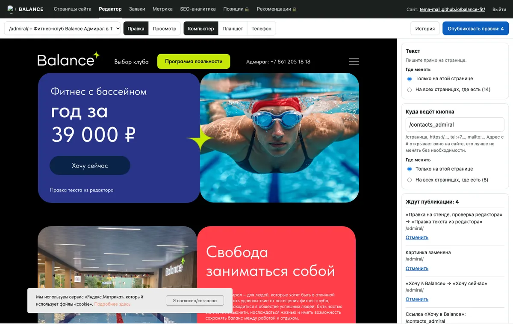
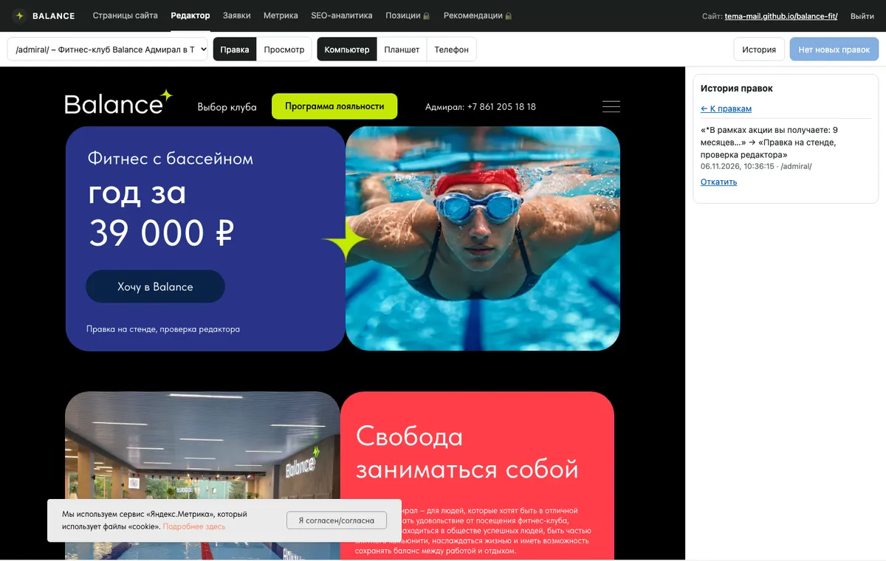
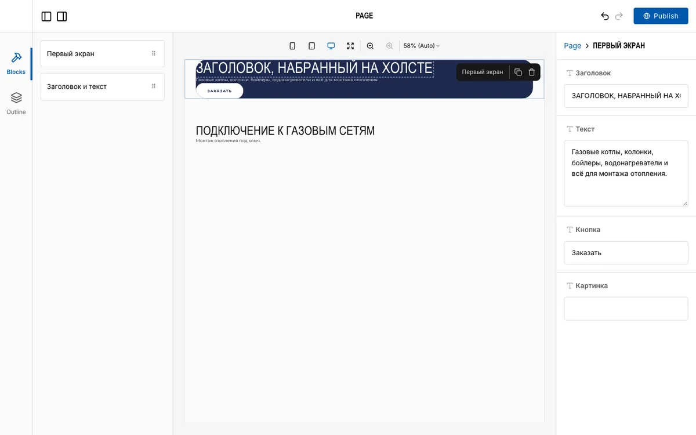

Редактор сайтов на коде: уровень 1 готов к проверке
Послушать итог голосом
Что готово
Первый уровень работает на стенде Balance: текст, картинки и ссылки кнопок правятся прямо на странице, публикуются и откатываются. Сетка закрыта. Живой balance-fit.ru на Тильде не затронут.
Открыть редактор на странице «Адмирал». Вход – логин и пароль кабинета Balance, для публикации панель попросит ключ GitHub.
| Проверено на стенде вживую | Итог |
|---|---|
| Вход, правка текста и картинки, публикация | 62 с, текст и картинка на странице |
| Откат через историю | Текст и картинка вернулись, стенд чистый |
| Браузер с подменой GitHub, 27 пунктов, плюс 19 автотестов | Все прошли; высота страницы до и после совпала: 6840 и 7139 px |
| Две независимые проверки кода | Обе нашли ошибки, исправлены; третью не запускал, новые сценарии покрыты прогоном |
| Смена адреса кнопки на настоящем стенде | Только в браузере с подменой GitHub и на настоящей сборке, без публикации |


Что важно знать при проверке
- GitHub Pages иногда зависает. Из восьми выкладок сегодня три упали через 10 минут на стороне GitHub, остальные прошли быстро. Панель пишет «Сборка не прошла», сайт остаётся прежним, правка в файле сохранена, выкладку надо запустить снова. На бою Pages нет, но это причина перед показом клиенту проверить схему на сервере.
- Картинка обрезается по центру под место. На «Адмирале» картинки стоят слоями, и другая высота открывала нижнюю. Кадрировать вручную пока нельзя.
- Окна: в «Просмотре» откройте окно и правьте текст прямо в нём. В «Правке» нажмите кнопку, в панели появится «Открыть окно и править». Крестик закрывает окно в обоих режимах.
- Одинаковый текст на странице меняется весь сразу. Панель об этом предупреждает.
- Правится не всё: ссылки, которые рисуют скрипты сайта (карта, формы, меню), и текст внутри скриптов панель не предлагает.
- Ключ GitHub только для стенда. Он лежит в браузере на общем адресе tema-mail.github.io, поэтому нужен ключ с правами на один этот репозиторий. Клиенту ключ не выдаём: перед выдачей нужна запись на сервер, это следующий шаг.
Шкала: что и когда
Время – моё активное, прогноз: быстро / вероятно / долго и ожидание. Себестоимость считаю по 1000 ₽ за час из нашей экономики проектов. Ваши ответы и подключение сервисов считаются отдельно.
| Уровень | Что получает клиент | Чем делаем | Часы | Ожидание | Себестоимость | На один сайт |
|---|---|---|---|---|---|---|
| 0. Основа | Ему не видно. Стадии, копии, проверка подъёма | Схема Газ-мага, шифрованные копии, проверка свежести | 0,7 / 1,5 / 3 | 1,6 ч | 1 600 ₽ | ≈15 мин |
| 1. Текст, картинки, ссылки кнопок | Клик по тексту – правка. Клик по картинке – замена. У кнопки – адрес. «Опубликовать», история, откат. Сетка закрыта | Свой модуль site-editor на Preact, правки отдельным файлом | 1,5 / 3 / 6 | 3,3 ч | 3 300 ₽ | 20–40 мин |
| 2. Удобства правки | Покажу скринами, по каждому скажете да или нет: черновик, контакты в одном месте и другое | Тот же модуль | 1 / 2 / 4 | 2,2 ч | 2 200 ₽ | ≈10 мин |
| 3. Списки в блоках | Добавить или убрать карточку, отзыв, строку цены, фото галереи | Тот же модуль, списки выносим в данные | 1,5 / 3 / 6 | 3,3 ч | 3 300 ₽ | 30–60 мин |
| 4. Блоки страницы | Скрыть блок, поменять порядок, вставить типовой блок в стиле заказчика | Puck на React, библиотека из 10–12 блоков | 3 / 6 / 12 | 6,5 ч | 6 500 ₽ | 1–3 ч |
Итого: уровни 0–1 ≈ 5 ч и 4 900 ₽, вся лестница ≈ 17 ч и 17 000 ₽ плюс подключение сайтов. Расчёт: шаг 5 минут, ревизия 10 минут, запас на доработки. Это прогноз: прошлые оценки расходились с фактом в разы, поэтому факт каждого уровня записываю и следующий пересчитываю. Каждый уровень работает сам по себе, следующий – только по вашему слову.
Убрано по вашему слову: новые страницы и настройки с ролями. title и description остаются в карточках страниц кабинета, в редактор их не переносим.
Сознательно не делаем: свободный холст, где можно двигать всё. Он ломает телефонную версию, а сетку вы сами закрыли.
Уровень 1: как устроен
- Клиент входит по логину и кликает текст, картинку или кнопку на своей странице.
- Если фраза есть на других страницах, выбирает: только эта страница или все.
- Картинка сжимается и обрезается под размер места, поэтому сетка не меняется.
- Правки лежат отдельным файлом и накладываются на собранный сайт. Меняются только нужные байты. Сборка с ошибкой не выкладывается, откат в истории.
Первоначальный опыт ниже искал текст в исходниках. В итоге выбрана схема надёжнее: правка накладывается на готовую страницу, поэтому правится и текст, собранный кодом.
Опыт только на чтение, с которого начинали: взял текст из собранных страниц (по 25 на сайт) и поискал его в исходниках.
| Сайт | Ровно одно место | Один файл, несколько мест | Несколько файлов | Не нашлось | Картинки |
|---|---|---|---|---|---|
| Газ-маг | 81% | 6% | 7% | 6% | 71 файл, 1 не найден |
| EV Sibir | 61% | 1% | 16% | 22% | 13 файлов |
| Elite Rose | 55% | 9% | 16% | 19% | 56 файлов |
| Milovini | 54% | 15% | 11% | 20% | 118 файлов |
| Balance (копия Тильды) | 31% | 1% | 65% | 3% | 80 файлов |
«Не нашлось» – это в основном текст, собранный кодом. При выбранной схеме он тоже правится, если попал в готовый HTML. Текст, который рисуют скрипты в браузере, панель не предлагает.
У Balance большая часть текста повторяется на многих страницах: шапка, подвал, окна. Поэтому панель спрашивает: только эта страница или все.
Редактор на React со своими блоками
То, что вы описали, готово в виде Puck: 13 635 звёзд, лицензия MIT, свежие коммиты. Я собрал пробу в отдельной папке: Astro 7.3.8, два блока с разметкой и стилями Газ-мага.

| Проверка | Результат |
|---|---|
| Стили заказчика в редакторе | есть: цвет, скругление и шрифт Oswald совпали |
| Правка текста прямо на холсте | работает |
| «Publish» → данные → пересборка | работает, новый заголовок на странице, сборка 3,2 с на двух страницах |
| JS-файлы на публичной странице | 0, только два маленьких встроенных скрипта React |
| Вес редактора | 1,3 МБ, грузится только в кабинете |
| Ошибки JS в редакторе | 0 |
Почему не с него начинаем. Puck работает только со своими блоками на React, а у нас блоки на Astro. Готовую страницу надо переписать на блоки и заново сверить с макетом. Для уровня 1 это 1–3 часа на сайт против 20–40 минут и риск сдвинуть вёрстку.
Где он окупается. Уровни 4–5 и новые сайты, если писать их сразу из таких блоков. По стеку: сайт остаётся на Astro и без лишнего JS, React живёт только в кабинете, потому что Puck работает только на нём. Обычные разделы кабинета остаются на Preact. Загрузку картинок, настоящую сборку на сервере и сложные блоки вроде слайдера в пробе не проверял.
Тест и бой
| Стадия | Где | Правки | Что нельзя |
|---|---|---|---|
| Тест | GitHub Pages у вас, noindex, согласование там | Сохранение коммитом, ключ только у вас | Показывать клиенту как готовое |
| На хостинге, не в бою | Сервер есть, домен смотрит на старый сайт | Как в тесте, плюс проверка серверной записи | Считать, что это уже бой |
| Бой | Боевой домен отдаёт наш код | Логин клиента, запись на сервер, новое только с теста | Техдолг на SEO, заявки, кнопки, контакты, данные: либо работает, либо не выкладываем |
Стадию определяю по факту: куда смотрит домен и что он отдаёт. Файлы на сервере и статус в реестре стадию не доказывают. Правило уже записал в память, а если неясно, куда относится правка, спрашиваю до работы.
Снимок боевых доменов за 6 ноября, запрос с мака:
| Домен | Что отдаёт | Стадия |
|---|---|---|
| evolutioncarservice.ru | наш код, FirstVDS 168.113.179.49 | БОЙ |
| gaz-mag.ru | наш код, сервер заказчика 62.109.0.63 | БОЙ |
| avtoball.ru | наш код, FirstVDS | БОЙ |
| deford.ru | наш код, FirstVDS; закрыт от поиска, canonical на deford-studio.ru | Бой по вашему слову, но не готов и служит стендом |
| balance-fit.ru, teyes-sibir.ru, rozalii.ru, alex-krown.com, kitaccess.by, grafit-service.ru | Тильда | Бой старого сайта, наш код – тест |
| evolutioncar.by | наш код, hoster.by; с мака тайм-аут, с шести внешних точек 200 | БОЙ |
| Milovini, Elite Rose и другие демо | боевые домены не проверял | спрошу, когда дойдём |
Копии: что и куда
После аварии Beget пропали заявки и позиции EV, токены и данные, которые жили только на том сервере. Значит, копия нужна всему, чего нет в GitHub.
| Что | Куда | Почему |
|---|---|---|
| Код, настройки сервера без ключей | GitHub | Уже так |
| Тексты и картинки клиента | Git на сервере + закрытый GitHub, шифрованная копия в S3 | История каждой правки и подъём за минуты |
| Заявки и базы с персональными данными | Только шифрованно в российское S3, не на GitHub | GitHub зарубежный, а база заявок по стандарту не хранится в репозитории (152-ФЗ, 242-ФЗ в техдолге Газ-мага). Юристом не проверено |
| Ключи и токены | Шифрованно в S3 | 2 ноября токен Газ-мага остался на недоступном сервере |
Копия пишется ночью у другого поставщика, чем хостинг. Если копии больше суток – приходит сигнал. Раз в месяц подъём на чистом сервере на проверку: копия, которую не поднимали, ничего не доказывает. На этом держится уровень 0.
Правило: проекты в РФ копируем в Cloud.ru
Решение от 6 ноября. Кабинет заводим на заказчика и настраиваем связку. Проверяем на Дефорде, Автобалле и Газ-маге.
Сколько можно хранить на одном аккаунте
Объём не проблема: общего предела нет. Делить надо не из-за места, а из-за денег, закона и риска потерять всё разом.
| Что | Условие | Что это значит |
|---|---|---|
| Общий объём | Не ограничен; однозонный класс без предела | Места хватит на всех. Но у стандартного, холодного и ледяного квота по умолчанию указана 0 ГБ, а бесплатные 15 ГБ – как раз стандартные. Проверить в кабинете |
| Бакеты | 100 на организацию | С запасом |
| Размер файла | До 5 ТБ, за один запрос до 5 ГБ | Не мешает |
| Бесплатные 15 ГБ | На всю организацию, один раз на участника, передавать третьим лицам нельзя | Один аккаунт на всех не умножит лимит |
| Цена сверх лимита с НДС, ₽/ГБ в месяц | Стандартное 1,84, однозонное 1,13, холодное 0,98, ледяное 0,49 (тариф, версия 260918) | Копия 15 ГБ стоит ≈ 28 ₽ в месяц, деньги незаметны |
На бесплатный лимит не опираемся
В прошлой версии я написал «бессрочно», как в документации. Правила акции жёстче, поправляю:
- Акция объявлена до 31 декабря 2026, Cloud.ru может изменить её или прекратить в любой момент, поддержка ограничена.
- На счёте нужно не меньше 100 ₽ или 100 бонусов.
- При неактивности 90 дней ресурсы могут приостановить, 120 дней – удалить. К неактивности относятся отсутствие входа в кабинет, нулевое потребление и пустой счёт.
- При нулевом балансе закрывается работа с файлами, а через 30 дней долга данные удаляются без восстановления. Срок 30 дней описан для физлиц и в разделе хранилища, у юрлиц проверить по договору.
Поэтому считаем копии обычной платной услугой: на счету запас, уведомления о балансе у нас и у заказчика, плюс наша проверка свежести копии. Для копий выбираем стандартный класс: он хранит две копии в разных зонах, однозонный – одну.
Делить или нет: свой аккаунт у каждого заказчика
| Свой аккаунт у заказчика (рекомендую) | Один наш аккаунт на всех | |
|---|---|---|
| Кончились деньги | Страдает один заказчик | Блокируются копии всех, через 30 дней риск удаления |
| Заявки с личными данными | Договор и данные у заказчика | Данные заказчика у нас; нужно поручение на обработку, спросить юриста |
| Заказчик ушёл | Копии уже у него, отзываем ключ | Выгрузка и удаление вручную |
| Утёк ключ | Задет один сайт | Отдельный ключ на бакет тоже защитит, но зависит от настройки |
| Бесплатные 15 ГБ | У каждого свои | Одни на всех, передача третьим лицам запрещена |
| Подключение | Заказчик регистрируется и пополняет счёт, нам даёт ключ | Быстрее |
| Учёт | Много кабинетов, нужен реестр и контроль балансов | Один кабинет |
Правило для стандарта: заказчик – свой аккаунт. Наши проекты – один аккаунт студии, отдельный бакет и ключ на проект. Если заказчик не может завести кабинет сам, регистрация всё равно на его реквизиты: мы только помогаем.
Проверка на трёх сайтах
| Сайт | Аккаунт | Что проверяем | Что копируем (по записям, уточнить на сервере) |
|---|---|---|---|
| deford.ru | Студии | Первая настройка, подъём на чистой папке | Файлы сайта, настройки; стенд store – отдельно, там база |
| avtoball.ru | Студии, свой бакет и ключ | Два проекта в одном аккаунте, ключ одного не видит другой | Заявки и файлы приёмника, настройки |
| gaz-mag.ru | Заказчика | Полный путь «кабинет на заказчика», сервер заказчика | /opt/gaz-mag/content, заявки, настройки, ключи шифрованно |
Каждая проверка: шифрованная копия ночью, ключ без права удаления там, где получится, версии и блокировка файлов, сигнал о старой копии, сигнал о балансе, подъём из копии в отдельной папке со сверкой файлов. Совместимость инструмента копирования с блокировкой файлов проверю на Дефорде: у restic в обсуждениях встречаются сложности. Прогноз: первый сайт 1–2 ч, следующие по 15–20 мин. После проверки вношу правило в чек-лист боя.
Сами сайты на Cloud.ru не переносим: для копий это не нужно. То, что почти все наши сайты стоят на одном сервере FirstVDS, – отдельный риск из стандарта защиты, его решаем отдельно.
Что идёт к нам в стандарт
- Один модуль на все сайты: редактор подключается пакетом и обновляется сразу у всех, копий кода по проектам нет.
- Боевой режим с Газ-мага: данные на сервере, сборщик, атомарная выкладка, 5 версий для отката, запись с проверкой версии.
- Тест на вашем GitHub, бой на хостинге: в шапке кабинета видно стадию.
- Копии: таблица выше на каждом боевом сайте до включения, проверка свежести, подъём раз в месяц.
- Новые сайты: текст целиком, картинки файлами, списки в данных. Тогда редактор подключается сразу.
- Клиент не может сломать: только текст без HTML, стили и сетка закрыты, сборка с ошибкой не выкладывается, каждая правка в истории.
- Приёмка каждого уровня на живом тесте: правка, сборка, откат, телефон, потом только бой.
- Реестр Штаба: поле «стадия» с проверкой домена. Сейчас «Прод» там не равно бою, Фёдор сможет ловить расхождения.
Нашлось на боевых сайтах
По новому правилу это не долг, а проблема. Взял из документов и записей проектов с 14 октября по 5 ноября, на серверах не проверял и ничего не чинил. Часть могла уже измениться.
- Газ-маг: заявки на момент записи не приходят в Telegram, только в файл на сервере. Нужны токен и туннель.
- Газ-маг: нет копии данных вне сервера, покупка и сохранение кликом на боевом домене не пройдены.
- Газ-маг: автопродление домена выключено, Метрика отвечает 403, нет режима работы, юр. документы расходятся.
- EV и Автобалл: нет копии заявок по расписанию. Автобалл: доставка в Telegram живой заявкой не проверена.
Как я это проверил
| Утверждение | Как проверил | Итог |
|---|---|---|
| Простая схема подойдёт сайтам на коде | Поиск текста из собранных страниц в исходниках, 5 сайтов | Да, с вопросами и запретом для части строк |
| Astro сам даст адрес текста в исходнике | Прочитал compile.js в Astro 7.3.8: разметка только в режиме разработки | Нет, в боевой сборке этого нет |
| Puck работает на Astro без лишнего JS на сайте | Сборка, браузер, 1440 и 375 px, подсчёт запросов JS | Да, на двух простых блоках |
| Сборка займёт меньше минуты | Прошлые сборки GitHub Actions: Газ-маг, Elite Rose, Дефорд 30–48 с, Milovini 53–96 с, один раз 1004 с | Только в GitHub, на сервере не мерил |
| Условия Cloud.ru | Документация, официальный тариф 260918, правила акции Free Tier | «Бессрочно» из документации расходится с правилами акции, держимся правил. Про 146 ₽ в правилах и тарифе ничего нет |
Не проверено. На серверы не заходил: система не пустила чтение с боевых, поэтому состояние копий и время сборки на сервере взяты из записей. Запись на сервер ещё не написана. На стенде проверена одна страница, другие сайты не подключались. Часы следующих уровней – прогноз.
Что нужно от вас
- Пощупать редактор на «Адмирале» и сказать, что не так. Опубликованное на стенде можно откатить в истории.
- Cloud.ru: кабинет студии для Дефорда и Автобалла, договорённость с заказчиком Газ-мага о его кабинете, на счёт от 100 ₽, ключи на мак. Пароли я не ввожу.
- Доступ к серверам Дефорда, Автобалла и Газ-мага: система запретила мне даже просмотр, нужно разрешение в настройках.
- Чинить проблемы Газ-мага и копии EV и Автобалла? Это боевые сайты, без вашего слова не трогаю.